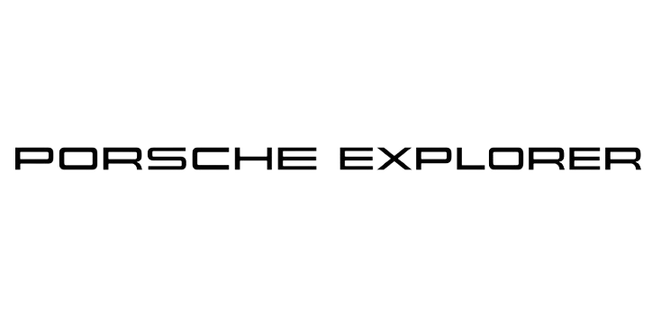

Roda
Conjunto de rodas de liga
leve com design derivado
do motorsport




Aceleração
de 0 a 100km/h
velocidade máxima
0CV
Conjunto de rodas de liga
leve com design derivado
do motorsport
Conjunto de rodas de liga
leve com design de cinco
raios de braço duplo
Toque nos cartões para descobrir